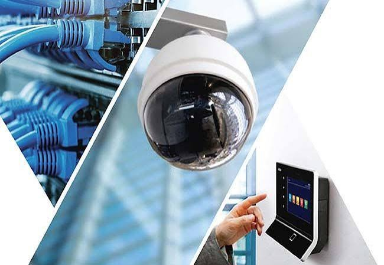

Nuestros Servicios

Energía Solar
Diseño y construcción de granjas solares, minigranjas, techos fotovoltaicos y sistemas de autogeneración a gran escala.

ElectroMovilidad
Infraestructura de carga para vehículos eléctricos, electrolineras comerciales e instalación de cargadores inteligentes.

Eficiencia Energética
Auditorías energéticas, compensación reactiva, estudio de pérdidas y optimización del consumo eléctrico industrial.

Proyectos Eléctricos
Diseño y ejecución de redes eléctricas de media y baja tensión, montaje de subestaciones y trámites normativos RETIE.

Domótica e Inmótica
Automatización integral de iluminación, climatización, persianas y gestión inteligente para hogares y edificios corporativos.

Seguridad Electrónica
Circuitos cerrados de TV (CCTV), control de acceso biométrico, detección temprana de incendios y monitoreo remoto.

Consultoría y Proyectos TIC
Redes de fibra óptica, cableado estructurado, enlaces inalámbricos de microondas e interconexión corporativa.